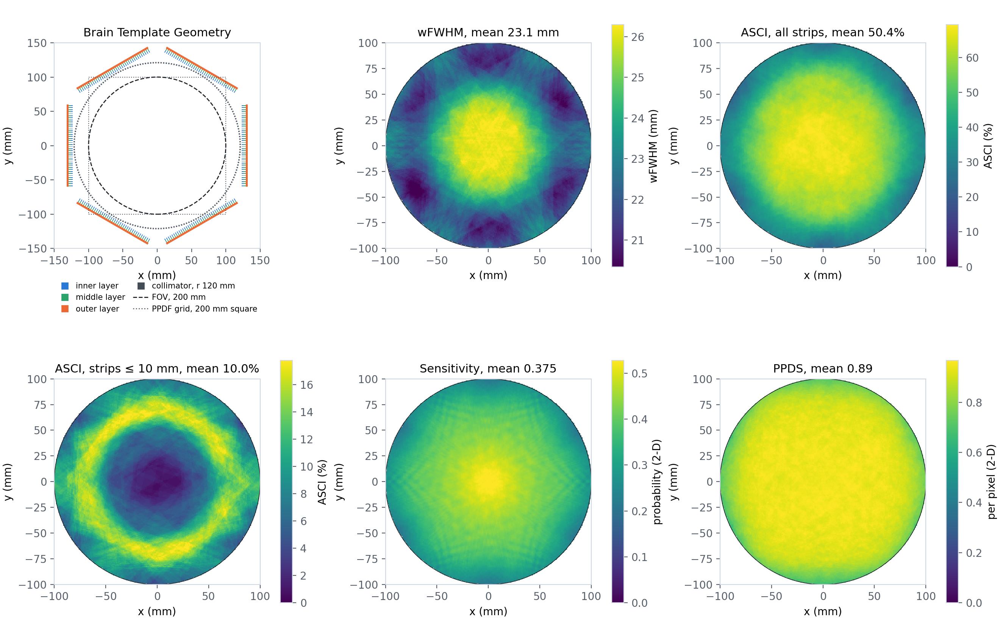

Brain Template Design Maps
The weighted FWHM, ASCI, sensitivity and PPDS maps of MIC slides 13 to 15, computed on the brain SC-SPECT template that Tridev built, with the new design-maps code (spebt/pymatana PR #5).
Maps Inside the 200 mm FOV
The square PPDF grid reaches 141 mm in its corners, past the collimator at 120 mm, so the maps are shown and averaged inside the 200 mm FOV circle only.

| Map | Mean | Range | Reading |
|---|---|---|---|
| wFWHM | 23.1 mm | 19.8 to 26.5 mm | each strip weighted by its whole PPDF, its counts |
| ASCI, all strips | 50.4% | 20.6 to 71.1% | 1° bins; strips above 1% of the peak strip sensitivity |
| ASCI, strips ≤ 10 mm | 10.0% | 0.6 to 19.4% | a ring near r = 70 mm |
| Sensitivity | 0.375 | 0.19 to 0.55 | in-plane detection probability |
| PPDS | 0.89 | 0.65 to 0.98 | per pixel, as on slide 15 (here 1 mm pixels) |
Findings
wFWHM is 23 mm because the wide strips carry the counts
The median strip is 5 mm wide, but each crystal's central strip is a broad fan: 55 mm for the inner-layer crystal of Figure 2, 34 mm for the middle and 25 mm for the outer. Weighting each strip by its whole PPDF counts these fans by their counts. By layer, wFWHM is 24.5 mm for the inner layer (39% of the counts), 14.5 mm for the middle (25%) and 11.5 mm for the outer (36%). Over all strips it is 17.2 mm; the map's pixel mean is higher because a wide strip covers more pixels.
ASCI depends on the strip-width window
With every strip, ASCI is 50% on average, highest at the centre. With strips up to 10 mm it is 10%, in a ring near r = 70 mm: each strip carries one FWHM, measured at its weighted centre, so the narrow ones are short chords close to the collimator. The window should follow the brain resolution target.
Sensitivity and PPDS are in-plane values
Sensitivity is 0.375 on average and 0.55 at the centre: the probability that a photon emitted in the plane is detected, per collimator position. PPDS is 0.89 per pixel.
The grid's corners lie outside the collimator
84 of the 720 crystal centres lie inside the 200 mm square. Pixels beyond the collimator see crystals with no collimation in between, which shows as hatched PPDF in the corners and as 64 mm sliver strips for crystals near a corner.
64 mm strips are few and carry almost no counts
pymatana records 64 mm when it finds no half maximum along its 64 mm sampling line. 114 of the 11,056 strips (1%) have that value; they carry under 0.1% of the strip PPDF and leave wFWHM unchanged, but they enlarge the strip areas, so PPDS is 0.89 with them and 0.92 without.


Checks
| Check | Result | |
|---|---|---|
| MIC slides 13 to 15 | the same code reproduces the benchmark and MOBO-optimized maps: ASCI and sensitivity identical, wFWHM within 1e-14, PPDS within 2e-8 (relative) | pass |
| Brain maps, independent code | code written from the definitions, without the PR's code, gives the same four maps; the means agree to six digits inside the FOV and beyond the collimator | pass |
| Strip files against the PPDFs | every strip's pixel count matches its mask; its sensitivity is the mean PPDF of its pixels (within 2e-7); its weighted centre agrees within 2e-5 mm with x on the first pixel index; no mask strip lacks a property row | pass |
| Pixel convention | with x and y swapped, PPDS would be 1.42 instead of 0.89, so the convention matters; the stored strip centres confirm x on the first index | pass |
| Strips without pixels | 228 and 235 property rows (the two collimator positions) have no pixels and no angle; the maps skip them; 20 crystals per position have only such rows | note |
For the Report
- Show and average the maps inside the 200 mm FOV circle; the grid's corners lie outside the collimator.
- State the ASCI window with the map: strips up to 10 mm here, and all strips for comparison.
- Read wFWHM as count-weighted: show it with the per-layer values or the strip-width histogram, since the wide inner-layer fans dominate it.
- Strips wider than 64 mm cannot be measured with pymatana's 64 mm sampling line; here they are 1% of the strips.
- Values are 2-D, per collimator position; PPDS per pixel.
Reproduce
Code: branch design-maps of github.com/Syedomershah99/pymatana, pull request github.com/spebt/pymatana/pull/5 into dev. Run folder on CCR: /projects/academic/rutaoyao/Omer/brain_maps_check; PPDFs stacked per collimator position from /vscratch/grp-rutaoyao/Tridev/brain_spect/data, linked as position_000_ppdfs.hdf5 and position_001_ppdfs.hdf5.
cd beam-analysis python arg_extract_beam_masks.py 0 --config brain.yml python arg_extract_beam_properties.py 0 --config brain.yml python arg_extract_beam_masks.py 1 --config brain.yml python arg_extract_beam_properties.py 1 --config brain.yml python arg_design_maps.py --config brain.yml --layouts 0 1 --out brain_maps.hdf5 python plot_design_maps.py brain_maps.hdf5 --labels "Brain template" --out brain_maps.png